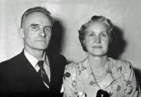

Søren Henriksen Melgaard
M, #3651, f. 1803, d. 28 januar 1875
Foreldre
Biografi
Søren Henriksen Melgaard ble født i 1803 på/i Nærøy, Nord-Trøndelag. Han giftet seg med
Inger-Anna Hansdatter Bjørknes den 7 mai 1835. Han døde den 28 januar 1875 på/i Nakling; Kolvereid, Nærøy, Nord-Trøndelag.
| Sist redigert |
26 januar 2011 00:00:00 |
| Slektskap | Bror av tippoldefar/mor til Håkon Wahl |
Inger-Anna Hansdatter Bjørknes
K, #3652, f. 15 desember 1805, d. 10 mai 1879
Foreldre
Biografi
Inger-Anna Hansdatter Bjørknes ble født den 15 desember 1805 på/i Kolvereid, Nærøy, Nord-Trøndelag. Hun giftet seg med
Søren Henriksen Melgaard den 7 mai 1835. Hun døde den 10 mai 1879 på/i Nakling; Kolvereid, Nærøy, Nord-Trøndelag.
Inger-Anna Hansdatter Bjørknes was also known as Inger-Anna Melgaard.
| Sist redigert |
26 januar 2011 00:00:00 |
| Slektskap | 4-menning 4 ganger forskjøvet til Håkon Wahl |
Karen Sørensdatter Nakling
K, #3653, f. 18 september 1833, d. 22 februar 1910
Foreldre
Biografi
Karen Sørensdatter Nakling ble født den 18 september 1833 på/i Nærøy, Nord-Trøndelag. Hun giftet seg med
Jonas Nilsen den 17 oktober 1889 på/i Nærøy, Nord-Trøndelag. Hun døde den 22 februar 1910 på/i Nærøy, Nord-Trøndelag.
Karen Sørensdatter Nakling was also known as Karen Nilsen.
| Sist redigert |
26 januar 2011 00:00:00 |
| Slektskap | Søskenbarn 3 ganger forskjøvet til Håkon Wahl |
Jonas Nilsen
M, #3654, f. omtrent 1828, d. 5 oktober 1915
Foreldre
Biografi
Jonas Nilsen ble født omtrent 1828 på/i Hall sokn, Jämtland, Sverige. Han giftet seg med
Thea Bergitta Jacobsdatter i 1863 på/i Fosnes, Nord-Trøndelag. Han giftet seg med
Karen Sørensdatter Nakling den 17 oktober 1889 på/i Nærøy, Nord-Trøndelag. Han døde den 5 oktober 1915 på/i Sandnes, Nærøy, Nord-Trøndelag.
| Sist redigert |
17 februar 2021 00:00:00 |
Hanna Sørensdatter Nakling
K, #3655, f. 29 juni 1837, d. 12 februar 1915
Foreldre
Biografi
Hanna Sørensdatter Nakling ble født den 29 juni 1837 på/i Nakling; Kolvereid, Nærøy, Nord-Trøndelag. Hun giftet seg med
Benjamin Nilsen Horvereid den 10 oktober 1882. Hun døde den 12 februar 1915 på/i Storenget 24/9, Skillingstad, Nærøy, Nord-Trøndelag. Hun ble gravlagt den 21 februar 1915 på/i Nærøy, Nord-Trøndelag.
Hanna Sørensdatter Nakling was also known as Hanna Horvereid. Hun ble døpt den 18 august 1847 på/i Kolvereid kirke, Kolvereid, Nord-Trøndelag. Hun ble konfirmert den 3 juli 1853 på/i Kolvereid kirke, Kolvereid, Nord-Trøndelag.
| Sist redigert |
10 november 2020 00:00:00 |
| Slektskap | Søskenbarn 3 ganger forskjøvet til Håkon Wahl |
Helmer Olaus Sørensen
M, #3656, f. 25 august 1840, d. 21 februar 1918
Foreldre
Biografi
Helmer Olaus Sørensen ble født den 25 august 1840 på/i Nakling; Kolvereid, Nærøy, Nord-Trøndelag. Han giftet seg med
Kristianne Mathea Andreasdatter Abelsen den 16 september 1873. Han døde den 21 februar 1918 på/i Kolvereid, Nærøy, Nord-Trøndelag.
| Sist redigert |
26 januar 2011 00:00:00 |
| Slektskap | Søskenbarn 3 ganger forskjøvet til Håkon Wahl |
Kristianne Mathea Andreasdatter Abelsen
K, #3657, f. 8 oktober 1849, d. 20 januar 1939
Foreldre
Biografi
Kristianne Mathea Andreasdatter Abelsen ble født den 8 oktober 1849 på/i Fosnes, Nord-Trøndelag. Hun giftet seg med
Helmer Olaus Sørensen den 16 september 1873. Hun døde den 20 januar 1939 på/i Kolvereid, Nærøy, Nord-Trøndelag.
Kristianne Mathea Andreasdatter Abelsen was also known as Kristianne Mathea Sørensen. Hun ble døpt den 9 juni 1850 på/i Fosnes kirke, Fosnes, Nord-Trøndelag.
| Sist redigert |
26 januar 2011 00:00:00 |
Inga Sofie Løvseth
K, #3658, f. 19 februar 1875, d. 23 april 1941
Foreldre
Familie: Oluf Olaussen Livik (f. 15 mars 1863, d. 17 november 1955)
| Sønn | Øyvind Livik+ (f. 14 februar 1896, d. 14 desember 1927) |
| Sønn | Olav Livik (f. 14 oktober 1898, d. 4 mars 1931) |
| Datter | Ruth Livik+ (f. 3 februar 1901, d. 16 mai 1978) |
| Sønn | Johan Livik+ (f. 4 juli 1903, d. 21 april 1928) |
| Datter | Olga Livik (f. 10 mai 1905, d. 13 januar 1984) |
| Sønn | Kolbein Livik (f. 11 september 1908, d. 11 januar 1985) |
| Datter | Haldis Livik (f. 1 mars 1910, d. 28 mars 1913) |
| Sønn | Harald Livik (f. 28 mars 1914, d. 22 august 1935) |
| Sønn | Hermod Livik (f. 4 desember 1915, d. 19 juli 1935) |
| Sønn | Halvor Livik (f. 26 april 1918, d. 15 april 2006) |
Biografi
Inga Sofie Løvseth ble født den 19 februar 1875 på/i Nakling; Kolvereid, Nærøy, Nord-Trøndelag. Hun giftet seg med
Oluf Olaussen Livik den 27 desember 1897. Hun døde den 23 april 1941 på/i Nærøy, Nord-Trøndelag. Hun ble gravlagt den 2 mai 1941 på/i Kolvereid kirkegård, Nærøy, Nord-Trøndelag.
Inga Sofie Løvseth was also known as Inga Sofie Livik.
| Sist redigert |
7 februar 2011 00:00:00 |
| Slektskap | 3-menning 2 ganger forskjøvet til Håkon Wahl |
Oluf Olaussen Livik
M, #3659, f. 15 mars 1863, d. 17 november 1955
Foreldre
Familie: Inga Sofie Løvseth (f. 19 februar 1875, d. 23 april 1941)
| Sønn | Øyvind Livik+ (f. 14 februar 1896, d. 14 desember 1927) |
| Sønn | Olav Livik (f. 14 oktober 1898, d. 4 mars 1931) |
| Datter | Ruth Livik+ (f. 3 februar 1901, d. 16 mai 1978) |
| Sønn | Johan Livik+ (f. 4 juli 1903, d. 21 april 1928) |
| Datter | Olga Livik (f. 10 mai 1905, d. 13 januar 1984) |
| Sønn | Kolbein Livik (f. 11 september 1908, d. 11 januar 1985) |
| Datter | Haldis Livik (f. 1 mars 1910, d. 28 mars 1913) |
| Sønn | Harald Livik (f. 28 mars 1914, d. 22 august 1935) |
| Sønn | Hermod Livik (f. 4 desember 1915, d. 19 juli 1935) |
| Sønn | Halvor Livik (f. 26 april 1918, d. 15 april 2006) |
Biografi
Oluf Olaussen Livik ble født den 15 mars 1863 på/i Nærøy, Nord-Trøndelag. Han giftet seg med
Inga Sofie Løvseth den 27 desember 1897. Han døde den 17 november 1955 på/i Nærøy, Nord-Trøndelag. Han ble gravlagt den 25 november 1955 på/i Kolvereid kirkegård, Nærøy, Nord-Trøndelag.
| Sist redigert |
7 februar 2011 00:00:00 |
| Slektskap | Søskenbarn 4 ganger forskjøvet til Håkon Wahl |
Hilda Kristine Løvseth
K, #3660, f. 18 mai 1877, d. 2 april 1947
Foreldre
Biografi
Hilda Kristine Løvseth ble født den 18 mai 1877 på/i Nærøy, Nord-Trøndelag. Hun døde den 2 april 1947. Hun ble gravlagt den 14 april 1947 på/i Kolvereid kirkegård, Nærøy, Nord-Trøndelag.
Hilda Kristine Løvseth bodde på/i Oslo.
| Sist redigert |
7 februar 2011 00:00:00 |
| Slektskap | 3-menning 2 ganger forskjøvet til Håkon Wahl |
Johan Olaussen Livik
M, #3661, f. 6 april 1871
Foreldre
Biografi
Johan Olaussen Livik ble født den 6 april 1871 på/i Liviken; Kolvereid, Nærøy, Nord-Trøndelag.
Johan Olaussen Livik ble døpt den 29 mai 1871 på/i Kolvereid, Nærøy, Nord-Trøndelag. Han innvandret til USA.
| Sist redigert |
20 august 2022 20:28:43 |
| Slektskap | Søskenbarn 4 ganger forskjøvet til Håkon Wahl |
Fridtjof Johansen Løvseth
M, #3662, f. 24 mars 1892, d. 10 oktober 1973
Foreldre

Fridtjof Nora Løvseth
Biografi
Fridtjof Johansen Løvseth ble født den 24 mars 1892 på/i Nærøy, Nord-Trøndelag. Han giftet seg med
Nora Ulrikke Eilertsdatter Solheim i 1920. Han døde den 10 oktober 1973 på/i Nærøy, Nord-Trøndelag. Han ble gravlagt den 18 oktober 1973 på/i Kolvereid kirkegård, Nærøy, Nord-Trøndelag.
Fridtjof Johansen Løvseth ble døpt den 3 juli 1892 på/i Kolvereid kirke, Nærøy, Nord-Trøndelag.
| Sist redigert |
13 mai 2026 10:59:21 |
| Slektskap | 3-menning 2 ganger forskjøvet til Håkon Wahl |
Nora Ulrikke Eilertsdatter Solheim
K, #3663, f. 5 oktober 1902, d. 21 april 1995
Foreldre
Biografi
Nora Ulrikke Eilertsdatter Solheim ble født den 5 oktober 1902 på/i Gravvik, Nærøy, Nord-Trøndelag. Hun giftet seg med
Fridtjof Johansen Løvseth i 1920. Hun døde den 21 april 1995 på/i Nærøy, Nord-Trøndelag. Hun ble gravlagt den 28 april 1995 på/i Kolvereid kirkegård, Nærøy, Nord-Trøndelag.
Nora Ulrikke Eilertsdatter Solheim was also known as Nora Ulrikke Løvseth.
| Sist redigert |
13 mai 2026 10:59:01 |
| Slektskap | 10-menning 1 gang forskjøvet til Håkon Wahl |
Reidar Astor Løvseth
M, #3664, f. 12 april 1921, d. 6 april 2016
Foreldre
| Datter | Reidun Løvseth+ |
| Sønn | Frode Johnny Løvseth |
Biografi
Reidar Astor Løvseth ble født den 12 april 1921 på/i Nærøy, Nord-Trøndelag. Han giftet seg med
Solveig Andine Kristiansen den 13 september 1952. Han døde den 6 april 2016 på/i Nærøy bo- og behandlingssenter, Kolvereid, Nærøy, Nord-Trøndelag. Han ble gravlagt den 15 april 2016 på/i Kolvereid kirkegård, Nærøy, Nord-Trøndelag.
Reidar Astor Løvseth bodde på/i Kolvereid, Nærøy, Nord-Trøndelag.
| Sist redigert |
10 april 2016 00:00:00 |
| Slektskap | 4-menning 1 gang forskjøvet til Håkon Wahl |
Frøydis Nikoline Løvseth
K, #3666, f. 1 mai 1932, d. 11 april 2018
Foreldre
Biografi
Frøydis Nikoline Løvseth ble født den 1 mai 1932 på/i Nærøy, Nord-Trøndelag. Hun giftet seg med
Erland Louis Berg i 1952. Hun døde den 11 april 2018 på/i Namsos, Nord-Trøndelag. Hun ble gravlagt den 25 april 2018 på/i Otterøy kirkegård, Namsos, Nord-Trøndelag.
Frøydis Nikoline Løvseth was also known as Frøydis Nikoline Berg. Hun bodde på/i Fosslandsosen; Otterøy, Namsos, Nord-Trøndelag.
| Sist redigert |
14 april 2018 00:00:00 |
| Slektskap | 4-menning 1 gang forskjøvet til Håkon Wahl |
Arne Olav Løvseth
M, #3667, f. 10 februar 1935, d. 25 juni 1987
Foreldre
Biografi
Arne Olav Løvseth ble født den 10 februar 1935 på/i Nærøy, Nord-Trøndelag. Han døde den 25 juni 1987. Han ble gravlagt den 2 juli 1987 på/i Kolvereid kirkegård, Nærøy, Nord-Trøndelag.
| Sist redigert |
7 februar 2011 00:00:00 |
| Slektskap | 4-menning 1 gang forskjøvet til Håkon Wahl |
Solveig Andine Kristiansen
K, #3668, f. 1 august 1926, d. 4 september 2019
Foreldre
Familie: Reidar Astor Løvseth (f. 12 april 1921, d. 6 april 2016)
| Datter | Reidun Løvseth+ |
| Sønn | Frode Johnny Løvseth |
Biografi
Solveig Andine Kristiansen ble født den 1 august 1926 på/i Alstahaug, Nordland. Hun giftet seg med
Reidar Astor Løvseth den 13 september 1952. Hun døde den 4 september 2019 på/i Nærøy bo- og behandlingssenter, Kolvereid, Nærøy, Nord-Trøndelag. Hun ble gravlagt den 12 september 2019 på/i Kolvereid kirkegård, Nærøy, Nord-Trøndelag.
Solveig Andine Kristiansen was also known as Solveig Andine Løvseth.
| Sist redigert |
6 september 2019 00:00:00 |
Olav Nordal Kjeøy
M, #3671, f. 13 november 1922, d. 6 januar 1963
Foreldre
Familie: Sylva Karoline Løvseth
Biografi
Olav Nordal Kjeøy ble født den 13 november 1922 på/i Nærøy, Nord-Trøndelag. Han giftet seg med Sylva Karoline Løvseth i 1949 på/i Nærøy, Nord-Trøndelag. Han døde den 6 januar 1963 på/i Nærøy, Nord-Trøndelag. Han ble gravlagt den 14 januar 1963 på/i Lundring kirkegård, Nærøy, Nord-Trøndelag.
| Sist redigert |
27 juni 2019 00:00:00 |
| Slektskap | 7-menning 1 gang forskjøvet til Håkon Wahl |
Erland Louis Berg
M, #3672, f. 9 desember 1924, d. 15 desember 2014
Foreldre
Biografi
Erland Louis Berg ble født den 9 desember 1924 på/i Otterøy, Nord-Trøndelag. Han giftet seg med
Frøydis Nikoline Løvseth i 1952. Han døde den 15 desember 2014. Han ble gravlagt den 19 desember 2014 på/i Otterøy kirkegård, Namsos, Nord-Trøndelag.
Erland Louis Berg bodde på/i Fosslandsosen; Otterøy, Namsos, Nord-Trøndelag.
| Sist redigert |
17 desember 2014 00:00:00 |
Jens Jacob Kruse
M, #3673, f. 6 april 1816, d. før 1853
Foreldre
Biografi
Jens Jacob Kruse ble født den 6 april 1816 på/i Horvereid; Kolvereid, Nærøy, Nord-Trøndelag. Han døde før 1853.
| Sist redigert |
7 februar 2011 00:00:00 |
| Slektskap | 3-menning 4 ganger forskjøvet til Håkon Wahl |
Sirianna Jensdatter Kruse
K, #3674, f. 30 september 1818, d. 26 oktober 1880
Foreldre
Biografi
Sirianna Jensdatter Kruse ble født den 30 september 1818 på/i Horvereid; Kolvereid, Nærøy, Nord-Trøndelag. Hun giftet seg med
Benjamin Jensen den 6 september 1849. Hun døde den 26 oktober 1880 på/i Horvereid; Kolvereid, Nærøy, Nord-Trøndelag.
Sirianna Jensdatter Kruse eide i 1854 Korshaugan 26/13, Horvereid; Kolvereid, Nærøy, Nord-Trøndelag.
| Sist redigert |
7 februar 2011 00:00:00 |
| Slektskap | 3-menning 4 ganger forskjøvet til Håkon Wahl |
Benjamin Jensen
M, #3675, f. 10 april 1825, d. 24 august 1870
Foreldre
Biografi
Benjamin Jensen ble født den 10 april 1825 på/i Horvereid; Kolvereid, Nærøy, Nord-Trøndelag. Han giftet seg med
Sirianna Jensdatter Kruse den 6 september 1849. Han døde av lungetæring den 24 august 1870 på/i Korshaugan 26/13, Horvereid; Kolvereid, Nærøy, Nord-Trøndelag.
| Sist redigert |
16 juli 2022 15:51:46 |
| Slektskap | Bror av 2.tippoldefar/mor til Håkon Wahl |
{kind=link}